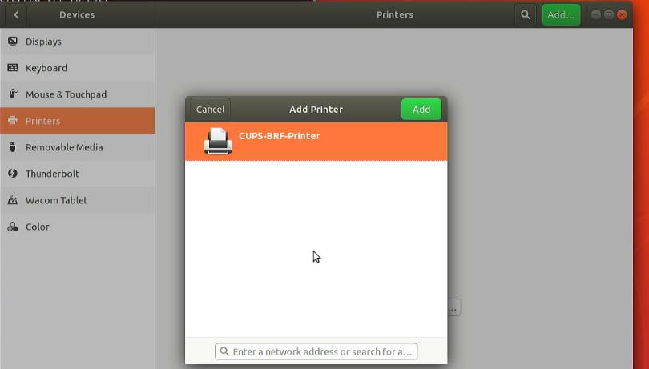
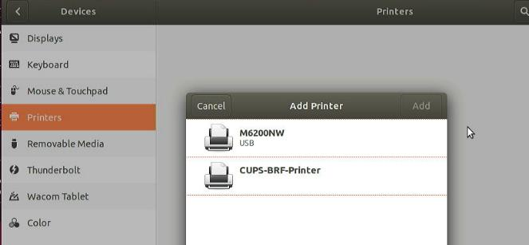
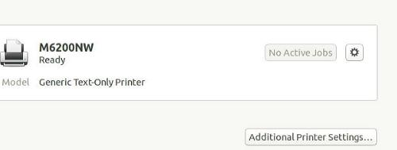
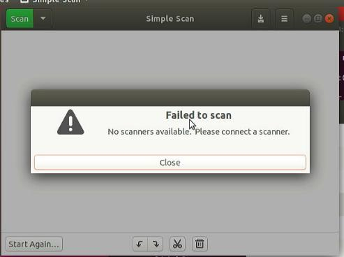

20251016
1. lxc based cups server
1. ubuntu180406 installed pure
Ubuntu180406 pure installed, in a new ethernet network:

Insert usb:

Generic Text-Only printer:

Simple Scan:

2. lxc/lxd based desktop
Create br0(for bridge networking):
nmcli con add type bridge ifname br0
nmcli con modify bridge-br0 bridge.stp no
nmcli con modify bridge-br0 ipv4.method manual ipv4.address "10.171.172.111/24" ipv4.gateway "10.171.172.1" ipv4.dns 223.5.5.5
nmcli con add type bridge-slave ifname eth0 master bridge-br0
Install lxd/create instance:
apt install -y lxd vim
sudo lxd init --auto
lxc launch ubuntu:24.04 cups-container
privileges config and add usb bus to container:
lxc config set cups-container security.privileged true
lxc config device add cups-container dev-bus-usb disk source=/dev/bus/usb path=/dev/bus/usb recursive=true
Re-connect eth0 to br0:
lxc network attach br0 cups-container eth0
lxc restart cups-container
3. workable lxc config
workable.
# lxc config show cups-proxy
architecture: x86_64
config:
image.architecture: amd64
image.description: ubuntu 24.04 LTS amd64 (release) (20251001)
image.label: release
image.os: ubuntu
image.release: noble
image.serial: "20251001"
image.version: "24.04"
security.nesting: "true"
security.privileged: "true"
volatile.base_image: 22b3bd8a5d4842f1955ffbaeb8e02900019c28758a6e7b7b27869172652202e9
volatile.eth0.hwaddr: 00:16:3e:d5:93:d4
volatile.idmap.base: "0"
volatile.idmap.next: '[]'
volatile.last_state.idmap: '[]'
volatile.last_state.power: RUNNING
devices:
cups-tcp:
connect: tcp:127.0.0.1:631
listen: tcp:127.0.0.1:631
type: proxy
myprinter:
productid: 8e10
type: usb
vendorid: 232b
usb-bus:
path: /dev/bus/usb
recursive: "true"
source: /dev/bus/usb
type: disk
ephemeral: false
profiles:
- default
stateful: false
description: ""